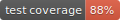
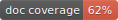
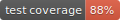
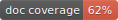

The Luxury Python Template¶

 





There are great tools available to automatically style, analyze and build your code.
They help you deliver better products faster. However, you have to learn how they work,
configure them and clean up after them. It’s easy to forgo this tedious work in the
beginning when all you can think about is the bright idea behind your new python
package. Will you do that later on? Probably not, because then chances are high that you
get hundreds of complaints from these tools and fixing them all will likely set you back
for weeks. Its way more fun to focus on new features anyway.
Writing better code would be so much easier if any new project, regardless of whether it
starts out as an afternoon experiment or the next big thing, would already include all
of the bells and whistles that professional packages use. For free and without having to
register yourself for yet another online service.
With the luxury python template, you can have all that right from the start! It is very opinionated, meaning the only thing you have to think about is the project name. It comes with a single, zero configuration command-line tool. Its options are intentionally limited and therefore easy to remember. You get everything with a single call of:
python package.py build
This includes:
Installing all needed dependencies.
Sorting import statements alphabetically with isort.
Styling your code Black.
Static type analysis with MyPy.
Checking for residual style errors with Flake8.
Checking for security issues with Bandit.
Checking for known vulnerabilities in dependencies with Safety.
Running tests with Unittest and evaluating test coverage with Coverage.py
Generating documentation with Sphinx and markdown support from MySt.
Checking for undocumented code (built into
package.py).Generating a single, beautiful report for all of the above with Pico.css.
Building wheel files and incrementing the version number according to calendar versioning.
Generating badges with the most important metrics for your repository like the ones shown above.
Removing temporary files and folders.
Example Report¶
The package.py tool that comes with the template can generate a single,
beautiful report that summarizes the results of the above-mentioned tools. Want an example?
Have a look at the following, problematic code:
import hashlib
import subprocess
from flask import Flask
def getHash(password: str):
"""
This is an example function for encrypting passwords.
Args:
pw: The password to be encrypted.
"""
return hashlib.md5(password.encode("utf-8"))
In this example, the code is stored in src/bad_example.py. If you run
python package.py build you will get the report.
Have a look!
Quick Guide¶
The template follows the instructions of the PyPa packaging tutorial. So, it should look familiar to most people. Using the template is easy. Just click the green “Use this template” button above (you need to be signed into GitHub) to create your own repository with all the files automatically copied from this template. Alternatively, you may just download / clone a copy of the files.
Provide some information about your project in setup.cfg. You can find details about the fields in the PyPa packaging tutorial. You may leave the version as it is. It is set automatically by
package.py.Rename
src/pythontemplateto whatever you like. The name determines how to import the package in a python script. You should therefore omit spaces, underscores, and dashes. You can add as many of these top-level folders as you like.
Commands¶
You can access the help of package.py by running:
python package.py --help
As explained above, you can build your wheel files and get a detailed report about your code by running:
python package.py build
The build command is also the only one that will update the badges. If you only want the detailed report, just run:
python package.py report
If you want to generate just the documentation and not get any report, use:
python package.py doc
If you want to remove the wheel files, documentation, and report:
python package.py remove
Frequently Asked Questions¶
If you run the build or report command, you may get the following error:
requests.exceptions.ReadTimeout: HTTPSConnectionPool(host='raw.githubusercontent.com', port=443): Read timed out.
This is because checking for dependency vulnerabilities using Safety requires a connection to a database. If you are getting this error, it means that the database is not reachable. This may happen either because your internet connection encountered some issues, or the database is currently unavailable for whatever reason.
License¶
The package is distributed under Apache License 2.0. You can use it for anything you want! Attribution would be nice, but you do not have to. ;)